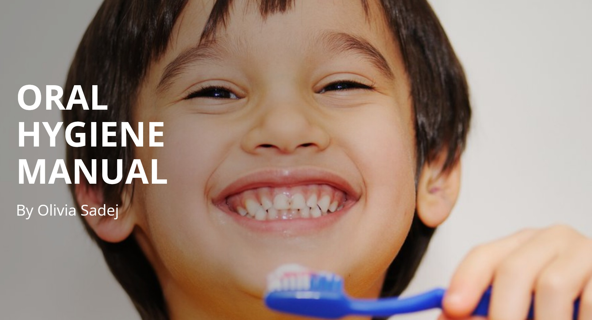

|
Olivia Sadej I'm a student at York University in Toronto, Ontario where I am currently studying Health Informatics while employed as a dental assistant. I am currently learning how information is managed throughout the healthcare system and how to develop and run the information systems that support it. Throughout my degree, I will explore topics such as the societal impact of health informatics, how it is used in a real-world settings, and emerging issues in this field. Through seminars and my own research, I will continue to strengthen my skills and expand my expertise in this rapidly growing sector of healthcare. |
{kind=link}
ProjectsI have worked on projects ranging from managing and designing a social media account to assisting with the transition from paper-based to digital-based medical records at Pickwick Dental, where I also work as a dental assistant. |
|
|
Pickwick Dental Cosmetic & General Dentistry, Cleanings, Teeth Whitening & More! I have managed the instagram page of Pickwick Dental, creating content to inform and engage patients about oral hygiene and dental care. |
|

|
Dental Hygiene Infographic Manual
I have created a dental hygiene infographic for Pickwick Dental to teach, motivate, and simplify important oral health information for patients. |
|
|
Ergonomic Policy for Dental Offices
I have developed and applied an ergonomic policy for PickWick Dental. Since dentistry is one of the highest-risk professions for musculoskeletal disorders, this policy helps protect dentists, hygienists, assistants, and front-office staff by promoting a healthy work environment. |
|
|
Volunteer experience at Mississauga Humane Society
I had volunteered at the Mississauga Humane Society, where I provided daily care to cats and dogs while following sanitation routines. Through these responsibilities, I strengthened my monitoring, reporting, and communication skills. |

|
Involved in data entry for Patient Experience Survey at Credit Valley Hospital
Entered and verified patient survey data while following hospital privacy standards. Through this experience, I enhanced my attention to detail and improved my familiarity with the MEDITECH data management software. |